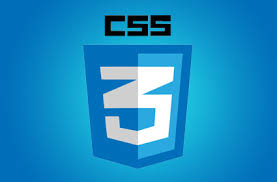

Головна | HTML | CSS | YouTube | Zoom

CSS (англ. Cascading Style Sheets, укр. Каскадні таблиці стилів) — це спеціальна мова стилю сторінок[en], що використовується для опису їхнього зовнішнього вигляду. Самі ж сторінки написані мовами розмітки даних.
CSS є основною технологією всесвітньої павутини, поряд із HTML та JavaScript.
Найчастіше CSS використовують для візуальної презентації сторінок, написаних HTML та XHTML, але формат CSS може застосовуватися до інших видів XML-документів.
Специфікації CSS були створені та розвиваються Консорціумом Всесвітньої мережі.
CSS має різні рівні та профілі. Наступний рівень CSS створюється на основі попередніх, додаючи нову функціональність або розширюючи вже наявні функції. Рівні позначаються як CSS1, CSS2 та CSS3. Профілі — сукупність правил CSS одного або більше рівнів, створені для окремих типів пристроїв або інтерфейсів. Наприклад, існують профілі CSS для принтерів, мобільних пристроїв тощо.
CSS (каскадне або блокове верстання) прийшло на заміну табличному верстанню вебсторінок. Головна перевага блокового верстання — розділення вмісту сторінки (даних) та його візуальної презентації.